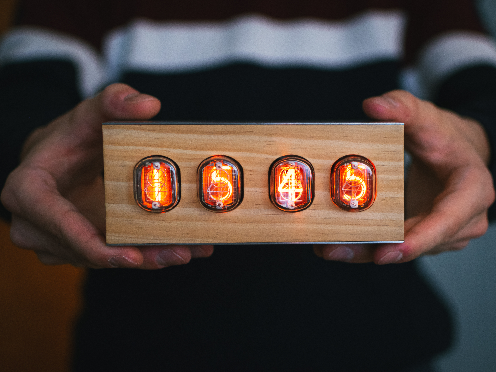
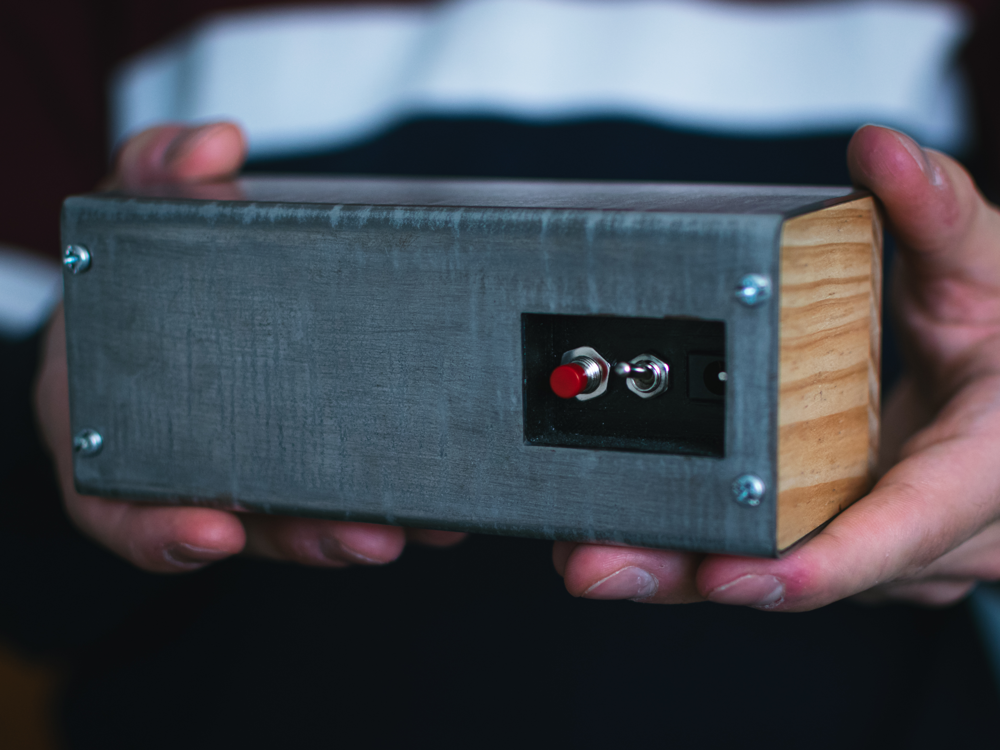

Horloge Nixie à 4 tubes : faire du beau avec ce qu’on a
Six mois de conception, et une horloge qui tourne encore sept ans plus tard.

L’idée de départ
Cette horloge est née d’une envie : réaliser quelque chose de beau avec ce que j’avais sous la main, dans une démarche d’upcycling. Je m’étais inspiré de vidéos YouTube et d’articles trouvés sur le web, qui m’avaient donné le goût de l’esthétique steampunk des tubes Nixie.
L’électronique
Le cœur du système est, une fois de plus, un Arduino Nano, programmé pour lire un module d’horloge temps réel DS1307. Il pilote un réseau de quatre registres à décalage 74HC595, un par tube. Ces circuits commandent à leur tour des transistors MPSA42, capables de supporter les 180 V que demandent les tubes. Cette tension est fournie par une alimentation dédiée.
Les 4 tubes QS27-1 sont rétroéclairés par des LED RGB. Leur couleur et leur intensité se règlent avec un bouton situé sur la face arrière.
Les circuits sont réalisés à la main, sur des cartes standard au pas de 2,54 mm, après des essais sur breadboard. Le schéma électronique et le code en C++ ont été créés entièrement à la main, avant l’arrivée des assistants IA.

Le boîtier
Les faces avant et latérales sont en bois massif de récupération : de la plinthe ou de la frisette de menuiserie, découpée à la CNC, collée, poncée et finie à la cire.
Le dessus, le fond et le dessous sont une tôle d’acier galvanisé récupérée dans un four, poncée puis pliée.
En ponçant, le zinc de la galvanisation laisse apparaître des stries qui évoquent l’acier damas, ce qui donne à l’horloge une apparence que je trouve très réussie.

Les outils
Les pièces usinées ou imprimées en 3D ont été dessinées sous SolidWorks et préparées en CAM sous Fusion 360. L’usinage se fait à la CNC avec Universal G-Code Sender, une chaîne très rudimentaire mais qui fonctionne bien, et les pièces imprimées l’ont été sur une Creality Ender 3 de première génération.
Sept ans plus tard
L’horloge est toujours là et fonctionne encore, branchée en continu. Elle a une limite connue : le module DS1307 dérive de quelques minutes par semaine. Une piste d’amélioration serait de le remplacer par un module à quartz compensé en température, comme le DS3231, qui se branche de la même façon.
Ce que j’en retiens
Ce projet a été une belle courbe d’apprentissage en débrouille : électronique avec une haute tension, menuiserie, usinage, impression 3D, programmation embarquée. Il m’a surtout appris à faire le mieux possible avec ce qu’on a sous la main.